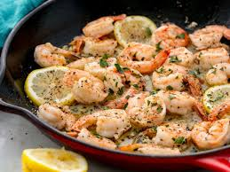

Garlic-shrimp

Garlic Shrimp Ingredients
These spicy garlic shrimp are my favorite way to dazzle in a hurry. Full of flavor and takes minutes to make! Serve immediately over pasta, with warm crusty bread and a garden salad, or with a rice dish - they take center stage at any meal.
Ingredients
- ⅓ cup extra-virgin olive oil
- 3 cloves garlic, sliced
- 1 teaspoon red pepper flakes
- 2 teaspoons paprika
- 2 pounds shell-on deveined jumbo shrimp
- ¼ cup lemon juice
- 2 tablespoons chopped fresh basil
- ½ teaspoon salt
- ¼ teaspoon black pepper
Steps
- Start by heating oil in a large skillet.
- Add garlic and cook until it becomes fragrant, fir about 1 minute.
- Add red pepper flakes and paprika to the oil, followed by shrimp.
- Pour in lemon juice and allow to cook until the shrimp are bright pink on the outside and the meat is no longer transparent.
- After 1 to 2 minutes reduce heat to medium low.
- Add basil and toss lightly.
- finally, Season with salt and pepper to serve.